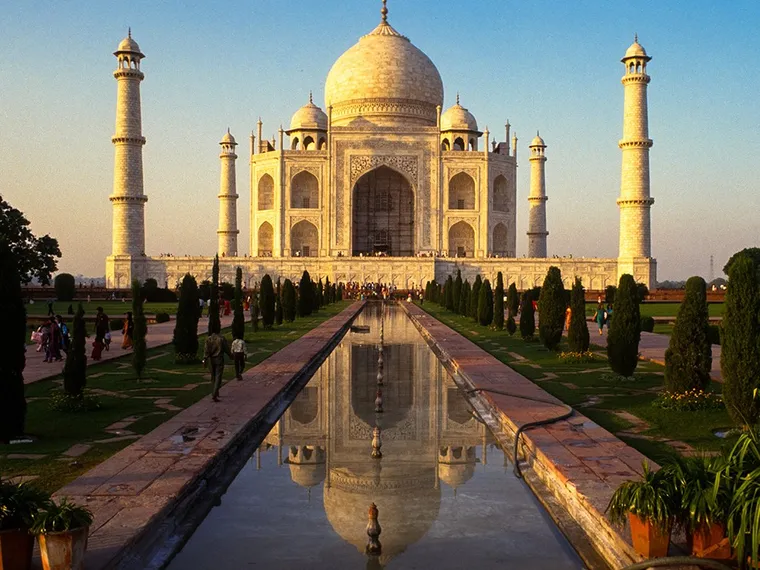
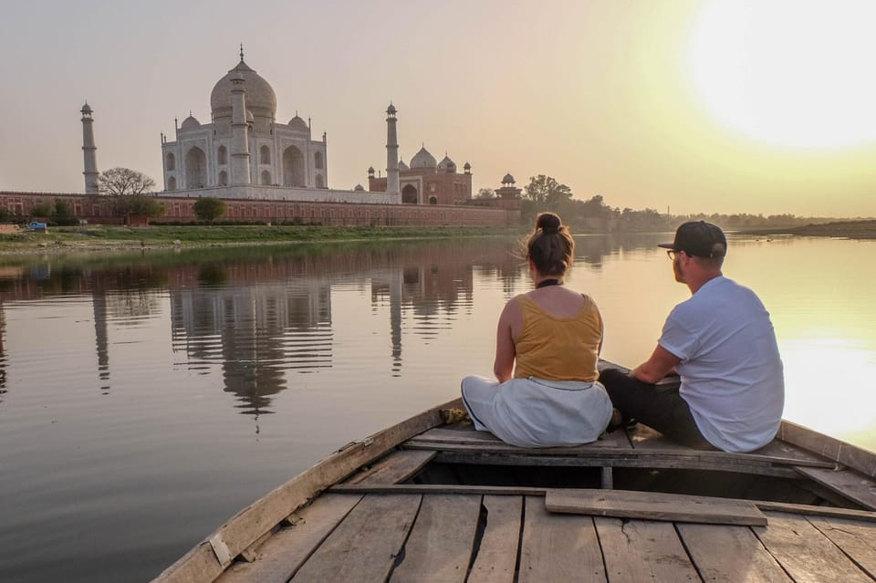
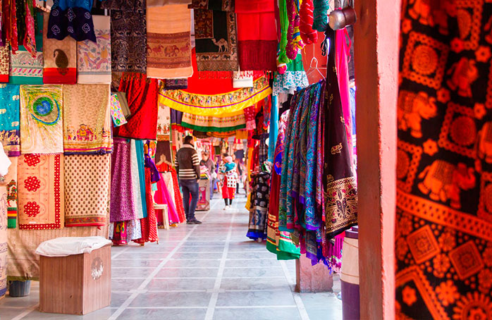
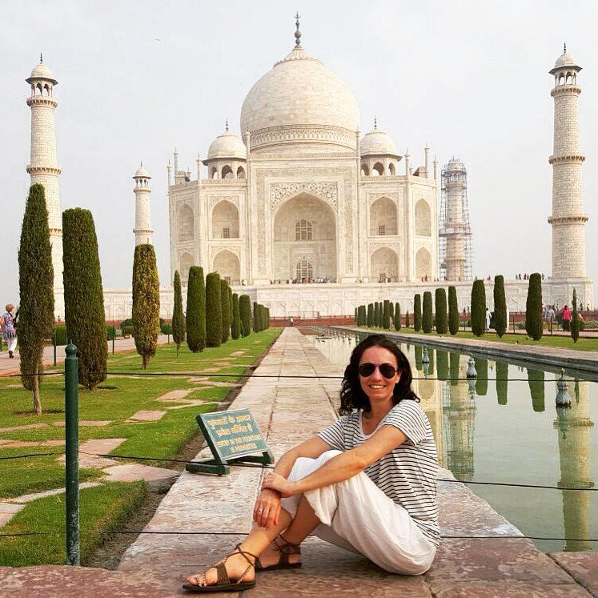

El Taj Mahal abre todos los días desde las 6:00 hasta las 18:30 hs. Se recomienda visitarlo al amanecer o al atardecer para evitar multitudes y aprovechar la luz ideal para fotos.
Taj mahal

Ubicación
Ciudad: Agra
País: India
Descripción
El Taj Mahal, ubicado en Agra, India, es uno de los monumentos más icónicos del mundo y símbolo del amor eterno. Construido en el siglo XVII por el emperador Shah Jahan en honor a su esposa Mumtaz Mahal, destaca por su elegante arquitectura de mármol blanco y su perfecta simetría. Admirarlo al amanecer o al atardecer es una experiencia verdaderamente mágica que deja una huella imborrable en todo visitante.
Actividades Turísticas

Fuerte Agra

Barca en Yamura
Taj mahal

Mausoleo Baby Taj
Fatehpur Sikri

Bazar de Agra
Cómo llegar al Taj Mahal
-
Nueva Delhi - India
Punto de partida
-
Tren / Autobús
Tren: 3 hs
Autobús: 5 hs
-
Taj Mahal
Entrada principal
Todo lo que debes saber antes de viajar
Se puede llegar desde Nueva Delhi en tren rápido, coche privado o autobús. Desde Agra, la ciudad donde se encuentra el Taj Mahal, es accesible en taxi o tuk-tuk. El acceso principal es por la entrada sur.
La entrada general para turistas extranjeros es de aproximadamente 1100 INR (unos 13-15 USD) e incluye el acceso a los jardines y el mausoleo principal. Niños menores de 15 años pueden entrar gratis.
Lleva calzado cómodo, sombrero, agua y protector solar. No se permiten mochilas grandes, trípodes ni alimentos dentro del recinto.
La mejor época es entre octubre y marzo, cuando el clima es más fresco y seco. Evita los meses de verano, que pueden ser extremadamente calurosos.
Sí, se ofrecen visitas guiadas en varios idiomas que incluyen el mausoleo, jardines y alrededores. Es recomendable reservar con anticipación, especialmente durante la temporada alta.
Reseñas de Nuestros Viajeros

Maria Rodriguez
"Muy buena la comunidad viajera, me gusta la asesoría personalizada para los viajes"
Antonio Ramirez
“Súper recomendado, fue una experiencia increíble y el viaje superó todas mis expectativas.”

Thiago Aguero
“Gracias a la comunidad viajera pude resolver todas mis dudas con la asesoría y disfrutar por completo del viaje.”